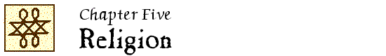

John Locke Chronology |
John Locke Manuscripts |
John Locke Resources |
John Locke Bibliography | ||

|
1653-1694 1695-1710 1711-1750 1751-1800 |
1801-1850 1851-1900 1901-1950 1951-1960 |
1961-1970 1971-1980 1981-1990 1991-2000 |
2001-2005 2006-2010 2011-2015 2016- |
 2001
2001
“Natural law, theology, and morality in Locke.” – See entry in Chapter 7.
Ragione e ascolto : l’ermeneutica di John Locke / R. Russo. – Napoli : Guida, 2001. – 266 p. – (Etica pratica)
ISBN 88-7188-475-2.
Unverified.
LS 2:9
New
“Necessità, indifferenza, libertà : i Rimostranti e Locke” / di Luisa Simonutti. // IN: Dal necessario al possibile : determinismo e libertà nel pensiero anglo-olandese del XVII secolo / a cura di Luisa Simonutti. – Milano : FrancoAngeli, ©2001. – (Filosofia scienza nel cinquecento e nel seicento. Studi ; 54). – p. 135-155.
“Socinianism, heresy and John Locke’s Reasonableness of Christianity” / Stephen D. Snobelen. // IN: Enlightenment and dissent. – 20 (2001):88-125.
Review of Locke, The reasonableness of Christianity (1999) [Locke #655]
2002
“ ‘Le culte privé est libre quand il est rendu dans le secret’.” – See entry in chapter 6.
“Body-truth and spirit-truth in Locke’s way of knowing.” – See entry in Chapter 7.
John Locke and biblical authority / by Malcolm Hester. – Paper presented at the meeting of the Southeastern Region of the Evangelical Theological Society, Germantown, TN, March 15-16, 2002. – 16 leaves.
Unverified.
“La position raisonnable d’Edward Stillingfleet.” – See entry in chapter 6.
Moderne aus dem Untergrund : radikale Frühaufklärung in Deutschland 1680-1720 / Martin Mulsow. – Hamburg : Felix Meiner Verlag, ©2002.
See III, “Sozinianische Frühaufklärung : Samuel Crells europäische Netzwerke” (pages 85-114)
Unverified.
English translation: Enlightenment underground : radical Germany, 1680-1720 / Martin Mulsow ; translated by H. C. Erik Midelfort. – Charlottesville ; London : University of Virginia Press, 2015. – (Studies in early modern German history). – See Chapter 2, “The Socinian Enlightenment : Samuel Crell’s European networks” (pages 61-77)
“Introduction.” // IN: Writings on religion / John Locke ; edited by Victor Nuovo. – Oxford : Clarendon Press, 2002. – p. xv-lvii.
Review: A.P.F. Sell, Br.J.Hist.Phil. 11 (2003):345-347.
“Reason or revelation? : Locke on the ground of religion” / Sudipta Dutta Roy. // IN: Indian philosophical quarterly. – 29 (2002):17-27.
Abstract: PhI 2003.
LS 2:9
“Reason to ratify : the influence of Locke’s religious beliefs on the creation and adoption of the United States constitution.” – See entry in Chapter 7.
2003
Republican learning : John Toland and the crisis of Christian culture, 1696-1722 / Justin Champion. – Manchester ; New York : Manchester University Press, 2003. – (Politics, culture and society in early modern Britain)
See esp. 3, “Reading scripture : the reception of Christianity not mysterious, 1696-1702” (p. 69-90)
“The love of God and the radical enlightenment : Mary Astell’s brush with Spinoza.” – See entry in Chapter 3.
“Locke’s Christology as a key to understanding his philosophy.” – See entry in Chapter 3.
“Lockean essences, political posturing, and John Toland’s reading of Isaac Newton’s Principia.” – See entry in Chapter 3.
2004
“The Reasonableness of Christianity” / Justin Champion. – Paper presented at a conference “John Locke through the centuries : assessing the Lockean legacy, 1704-2004,” Beinecke Library, Yale University, October 29, 2004.
Locke’s use of the Bible in The two treatises, The reasonableness of Christianity, and A letter concerning toleration / by Jonathan Donald Conrad. – Thesis (Ph.D.)– Northern Illinois University, 2004. – vii, 264 leaves.
Unverified.
“St. Paul’s parentheses” / Joan Dayan. // IN: Southwest review. – 89 (2004):421-441.
LS 6:6
“Locke’s reading of St Paul” / Victor Nuovo. – Paper presented at the John Locke Tercentenary Conference, St Anne’s College, Oxford, 2-4 April 2004.
Science and religion, 1450-1900 : from Copernicus to Darwin / Richard G. Olson. – Westport, Conn. ; London : Greenwood Press, 2004.
See “John Locke and the rise of Deism” (p. 125-130)
The biblical politics of John Locke. – See entry in Chapter 7.
“Revelation and certainty” / M.A. Stewart. – Paper presented at the John Locke Tercentenary Conference, St Anne’s College, Oxford, 2-4 April 2004.
2005
“Jak se stal Locke málem deistou?” = “How did Locke nearly come to be a Deist?” / Miloš Dokulil. // IN: Filosofický časopis. – 53 (2005):99-123.
LS 5:7
“Il corpo immortale : filosofia e teologia nell’ultimo Locke” / Chiara Giuntini. // IN: Rivista di filosofia. – 96 (2005):187-215.
Abstract: PhI 2006.
LS 6:6
“Original sin, the struggle for stability, and the rise of moral individualism in late seventeenth-century England” / Michael Heyd. // IN: Early modern Europe : from crisis to stability / edited by Philip Benedict and Myron P. Gutmann. – Newark : University of Delaware Press, ©2005. – p. 197-233.
“Stillingfleet and Locke on substance, essence, and articles of faith.” – See entry in Chapter 3.
“Locke ‘cattolico’ e altre stravaganze” / Giorgio Lanaro. // IN: Rivista di storia della filosofia. – 60 (2005):105-109.
Unverified.
LS 6:8
Mooney, T. B. & Imbrosciano, A.
“The curious case of Mr. Locke’s miracles” / T. Brian Mooney and Anthony Imbrosciano. // IN: International journal for philosophy of religion. – 57 (2005):147-168.
Abstract: PhI 2006.
LS 5:11
“John Locke e il socinianesimo” / Luisa Simonutti. // IN: Fausto Sozzini e la filosofia in Europa : atti del Convegno, Siena, 25-27 Novembre 2004 / a cura di Mariangela Priarolo and Emanuela Scribano. – Siena : Accademia Senese degli Intronati, 2005. – p. 211-249.
Evidence and faith : philosophy and religion since the seventeenth century / Charles Taliaferro. – Cambridge ; New York : Cambridge University Press, 2005. -- (The evolution of modern philosophy)
See “The ascendancy of rules of evidence in early modern philosophy of religion” (p. 110-159)
2006
“ ‘Directions for the profitable reading of the Holy Scriptures’ : biblical criticism, clerical learning and lay readers, c. 1650-1720” / Justin Champion. // IN: Scripture and scholarship in early modern England / edited by Ariel Hessayon, Nicholas Keene. – Aldershot, Hampshire, England ; Burlington, VT : Ashgate, ©2006. – p. 208-230.
LS 7:5
“Resurrecting by numbers in the eighteenth century.” – See entry in Chapter 3.
“Melville, Locke, and faith.” – See entry in Chapter 7.
“Written in the flesh : Isaac Newton on the mind-body relation.” – See entry in Chapter 3.
“Friendly criticism : Richard Simon, John Locke, Isaac Newton and the Johannine comma” / Rob Iliffe. // IN: Scripture and scholarship in early modern England / edited by Ariel Hessayon, Nicholas Keene. – Aldershot, Hampshire, England ; Burtlington, VT : Ashgate, ©2006. – p. 137-157.
LS 7:9
“Vernunft, Erfahrung, Religion : Anmerkungen zu John Lockes ‘Reasonableness of Christianity’ ” / Wolfgang Leidhold. // IN: John Locke : Aspekte seiner theoretischen und praktischen Philosophie / herausgegeben von Lothar Kreimendahl (2006). – p. 159-178.
Unverified.
LS 7:10
“Political society and religious liberty : Locke at Cleves and in Holland.” – See entry in Chapter 2.
“Revealed religion, the British debate” / M.A. Stewart. // IN: The Cambridge history of eighteenth-century philosophy / edited by Knud Haakonssen. – Cambridge : Cambridge University Press, 2006. – vol. 1:683-709.
See “The legacy of Locke” (p. 685-688)
2007
“ ‘A law of continuity in the progress of theology’ : assessing the legacy of John Locke’s Reasonableness of Christianity, 1695-2004” / Justin Champion. // IN: “John Locke through the centuries …” / edited by James G. Buickerood and Earle Havens. // IN: Eighteenth-century thought. – 3 (2007):111-142.
LS 7:6
“Locke on faith and reason.” – See entry in Chapter 3.
“Poiret and Locke.” – See entry in Chapter 3.
“ ‘Our religion and liberties’ : Mary Astell’s Christian political polemics.” – See entry in Chapter 7.
The Church of England and the Bangorian controversy, 1716-1721 / Andrew Starkie. – Woodbridge, Suffolk, UK : Boydell Press, 2007. – (Studies in modern British religious history ; no. 14)
See p. 126-130.
“Reasons of redemption : on the specific sense of The reasonableness of Christianity in Locke’s rationale of the covenant of faith” / Miklós Vassányi. // IN: Tijdschrift voor filosofie. – 69 (2007):267-298.
Abstract: PhI 2008.
LS 7:18
2008
The soul sleepers : Christian mortalism from Wycliffe to Priestley / Bryan W. Ball. – Cambridge, James Clarke & Co, 2008.
See “John Locke and the reasonableness of Christian mortalism” (pages 119-126) and “Samuel Bold, Henry Layton and William Coward” (pages 128-138)
“Locke on competing miracles” / T. Dumsday. // IN: Faith and philosophy. – 25 (2008):416-424.
Unverified.
LS 9:6
Scripture and Deism : the Biblical criticism of the eighteenth-century British Deists / Diego Lucci. – Bern ; New York ; Oxford : Peter Lang, ©2008. – (Studies in early momdern European culture = Studi sulla cultura europea della prima età moderna ; vol. 3)
See “Locke’s ‘way of ideas’ and its influence upon the Deists’ hermeneutics” (pages 44-52)
“Aspects of Stoicism in Locke’s philosophy.” – See entry in Chapter 3.
Invocation and assent : the making and remaking of Trinitarian theology / Jason E. Vickers. – Grand Rapids, Mich. ; Cambridge : William B. Eerdmans Publishing Company, 2008.
See ch. 4, “Locke’s legacy” (p. 135-168)
LS 9:16
2009
“Locke and the political origins of secularism” / George Kateb. // IN: Social research. – 76 (2009):1001-1034.
LS 10:8
Een curieuze kwestie : Hudde in discussie met Spinoza, Van Limbocth, Locke, en De Volder / Wim Klever. – Posted on the Internet on 4 November 2009.
Available at: http://www.benedictusdespinoza.nl/lit/Klever_GODS_UNICITEIT.pdf [viewed 5 November 2009]
“Newton, Locke and the Trinity : Sir Isaac’s comments on Locke’s A paraphrase and notes on the Epistle of St. Paul to the Romans” / Kim Ian Parker. // IN: Scottish journal of theology. – 62 (2009):40-52.
Includes a transcription of Newton’s comments on the paraphrase of Romans [Jewish National and University Library in Jerusalem, Yahuda Var. 1, MS. Newton 8.2, f. 4]
LS 9:12
“John Locke’s covenant theology” / Joanne Tetlow. // IN: Locke studies. – 9 (2009):167-199.
LS 10:13
Deism in Enlightenment England : theology, politics, and Newtonian public science / Jeffrey R. Wigelsworth. – Manchester ; New York : Manchester University Press, 2009. – (Politics, culture and society in early modern Britain)
2010
“Edwards, John (1637-1716)” / John C. Higgins-Biddle. // IN: The Continuum companion to Locke / general editors, S.-J. Savonius-Wroth, Paul Schuurman, Jonathan Walmsley (2010). – p. 95-96.
“The reasonableness of Christianity and its Vindications” / John C. Higgins-Biddle. // IN: The Continuum companion to Locke / general editors, S.-J. Savonius-Wroth, Paul Schuurman, Jonathan Walmsley (2010). – p. 269-273.
“Faith, reason and opinion” [in The Continuum companion to Locke]. – See entry in Chapter 3.
“Reconsidering John Sergeant’s attacks on Locke’s Essay.” – See entry in Chapter 3.
“Socinianism” / James Marshall. // IN: The Continuum companion to Locke / general editors, S.-J. Savonius-Wroth, Paul Schuurman, Jonathan Walmsley (2010). – pages 213-215.
“Philip Doddridge and the formulation of Calvinistic theology in an era of rationalism and deconfessinalization” / Richard A. Muller. // IN: Religion, politics and dissent, 1660-1832 : essays in honour of James E. Bradley / edited by Robert D. Cornwall, William Gibson. – Farnham, Surrey, England ; Burlington, VT, USA : Ashgate Publishing, ©2010. – p. 65-84.
“Milner, John (1628-1702)” / J. K. Numao. // IN: The Continuum companion to Locke / general editors, S.-J. Savonius-Wroth, Paul Schuurman, Jonathan Walmsley (2010). – p. 100-102.
“Reconciling human freedom and sin : a note on Locke’s Paraphrase”/ J. K. Numao. // IN: Locke studies. – 10 (2010):95-112.
LS 11:9
“Willis, Richard (1664-1734)” / J. K. Numao. // IN: The Continuum companion to Locke / general editors, S.-J. Savonius-Wroth, Paul Schuurman, Jonathan Walmsley (2010). – p. 117-118.
“Deism” / Victor Nuovo. // IN: The Continuum companion to Locke / general editors, S.-J. Savonius-Wroth, Paul Schuurman, Jonathan Walmsley (2010). – pages 135-137.
“Enthusiasm” [in The Continuum companion to Locke]. – See entry in Chapter 3.
“A paraphrase and notes on the epistles of St Paul” / Victor Nuovo. // IN: The Continuum companion to Locke / general editors, S.-J. Savonius-Wroth, Paul Schuurman, Jonathan Walmsley (2010). – pages 277-280.
“God” / G. A. J. Rogers. // IN: The Continuum companion to Locke / general editors, S.-J. Savonius-Wroth, Paul Schuurman, Jonathan Walmsley (2010). – pages 153-155.
2011
“Emilie du Châtelet on the existence and nature of God : an examination of the arguments in light of their sources” / Marcy P. Lascano. // IN: British journal for the history of philosophy. — 19 (2011):741-758.
LS 11:7
Christianity, antiquity, and enlightenment : interpretations of Locke / Victor Nuovo. – Dordrecht ; London ; New York : Springer, ©2011. – xix, 274 p. – (Archives internationales d’histoire des idées = International archives of the history of ideas ; 203)
ISBN 978-94-007-0273-8.
LS 11:9
Reviews: T. Stanton, Locke studies 11 (2011):199-205; D. Levitin, Journal of the history of philosophy 51 (2013):128-129.
“Locke’s hermeneutics of existence and his representation of Christianity” / Victor Nuovo. // IN: Conscience and scripture : Locke and Biblical hermeneutics / edited by Luisa Simonutti. – Dordrecht ; London ; New York : Springer, 2011.
Unverified.
“Locke’s proof of the divine authority of Scripture” / Victor Nuovo. // IN: Religion and philosophy in enlightenment Britain / edited by Ruth Savage. – Oxford : Clarendon Press, forthcoming 2011.
Revised version included as Chapter 3 of Christianity, antiquity, and enlightenment (2011).
Unverified.
Shapers of English Calvinism, 1660-1714 : variety, persistence, and transformation / Dewey D. Wallace, Jr. – Oxford ; New York : Oxford University Press, ©2011. – (Oxford studies in historical theology)
See 6, “John Edwards : Church of England Calvinist” (p. 205-242, 301-313 [notes])
2012
“Locke and original sin” / Aderemi Artis. // IN: Locke studies. – 12 (2012):201-219.
“Locke’s biblical critique.” – See entry in Chapter 7.
“ ‘A super-political concernment’ : evolution and revolution of inward light from Juan de Valdés to John Locke” / Julián Jiménez Heffernan. // IN: Poiesis and modernity in the old and new worlds / Anthony J. Cascardi and Leah Middlebrook, editors. – Nashville, Tenn. : Vanderbilt University Press, ©2012. – (Hispanic issues ; vol. 39). – p. 181-199.
LS 12:5
“Locke and Leibniz on religious faith” / Michael Losonsky. // IN: British journal for the history of philosophy. – 20 (2012):703-721.
LS 12:6
New
Re-visioning reason, revelation, and rejection in John Locke’s An essay concerning human understanding and John Toland’s Christianity not mysterious / written by Jonathan S. Marko. – Thesis (Ph.D.)–Calvin Theological Seminary, 2012. – x, 270 leaves.
Unverified.
“Introduction.” // IN: Vindications of The reasonableness of Christianity / edited with introductions, notes, and critical apparatus by Victor Nuovo (2012). – p. xvii-cxi.
Contains: General introduction – Textual introduction – Introduction to Pierre Coste’s French version of the Vindications.
New
“La teología de John Locke” / Leopoldo José Prieto López. // IN: Revista española de teología. -– 72 (2012):29-84.
Unverified.
“Il saggio di Locke sull’infallibilità del papa” / Raffaele Russo. // IN: Archivio di storia della cultura. – 25 (2012):461-470.
Followed by: “È necessario che ci sia, nella Chiesa, un infallibile interprete della Sacra Scrittura? No” / John Locke ; traduzione italiana di Raffaele Russo (p. 471-478); an Italian translation of Locke’s essay on infallibility [PRO 30/24/47/33]
LS 14:13
“Christianity and evidentialism : Van Til and Locke on facts and evidence” / Nathan D. Shannon. // IN: Westminster theological journal. – 74 (2012):323-353.
LS 13:11
2013
Una politica a fondamento teologico : Locke e il cristianesimo. – See entry in Chapter 7.
“ ‘Nature’s God’ as Deus sive Natura : Spinoza, Jefferson, and the historical transmission of the theological-political question” / Jeffrey A. Bernstein. // IN: Resistance to tyrants, obedience to God : reason, religion, and republicanism at the American founding / edited by Dustin Gish and Daniel Klinghard. – Lanham ; Toronto ; Plymouth, UK : Lexington Books, ©2013. – pages 65-81.
“Philosophy, revealed religion, and the Enlightenment” / Alexander Broadie. // IN: The Oxford handbook of British philosophy in the eighteenth century / edited by James A. Harris. – Oxford : Oxford University Press, 2013. – p. 621-637.
LS 14:5
“Faiths of our modern fathers : Bacon’s progressive hope and Locke's liberal Christianity” / Robert Faulkner. // IN: Resistance to tyrants, obedience to God : reason, religion, and republicanism at the American founding / edited by Dustin Gish and Daniel Klinghard. – Lanham ; Toronto ; Plymouth, UK : Lexington Books, ©2013. – pages 19-41.
Politicizing the Bible : the roots of historical criticism and the secularization of scripture, 1300-1700. – See entry in chapter 7.
“John Locke’da dini ınancın rasyonalitesi” = “The rationality of religious belief in John Locke” / Tahsın Ölmez. // IN: Beytulhikme : an internaitonal journal of philosophy. – 3 (June 2013):181-197.
LS 14:12
Religion in public : Locke’s political theology / Elizabeth A. Pritchard. – Stanford, California : Stanford University Press, 2013. – 227 p.
LS 14:12
2014
Idols of nations : biblical myth at the origins of capitalism. – See entry in Chapter 7.
New
“John Locke on monotheism : a dispute with Johannes Hudde” / Giuliana Di Biase. // IN: Archivio di filosofia. – 82 (2014):317-329.
Unverified.
“ ‘The chief characteristical mark of the true church’ : John Locke’s theology of toleration and his case for civil religion” / Aaron L. Herold. // IN: Review of politics. – 76 (2014):195-221.
Abstract: IPSA 64:4314.
LS 14:8
“Justification, ecumenism, and heretical red herrings in John Locke’s The reasonableness of Christianity” / Jonathan S. Marko. // IN: Philosophy & theology. -- 26 (2014):245-266.
Enlightenment underground : radical Germany, 1680-1720. – See entry for original German version (2002)
2016
“John Locke, legge di natura, diritti, rivelazione.” See entry in Chapter 3.
“Locke’s philosophy of religion” / Marcy P. Lascano. // IN: A companion to Locke / edited by Matthew Stuart … (2016). – pages 469-485.
“Monarchical sovereignty and Christology in John Locke’s Two treatises of government and The reasonableness of Christianity.” – See entry in Chapter 7.
“The promulgation of right morals : John Locke on the church and the Chrisitan as the salvation of society.” – See entry in Chapter 3.
“The Reasonableness of Christianity and A paraphrase and notes on the Epistles of St Paul” / Victor Nuovo. // IN: A companion to Locke / edited by Matthew Stuart … (2016). – pages 486-502.
New
“Religion als Aufklärung : Anmerkungen zum Religions- und Christentumsverständnis John Lockes (1632-1704)” / Georg Raatz. // IN: Neue Zeitschrift für Systematische Theologie und Religionsphilosophie. – 58 (2016):309-324.
New
“Two conceptions of religious self in Lockean religiosity” / Vered Sakal. // IN: The journal of religion. – 96 (2016):332-345.
2017
New
“The ‘philosophical Bible’ and the secular state” / Montserrat Herrero. // IN: The European legacy. – 22 (2017):31-48.
New
The laws of Christ and nature : the Biblical interpretation of John Locke / William C. Love. – Thesis (Ph.D.)–Emory University, 2017. – 223 pages.
Unverified.
New
Measuring the distance between Locke and Toland : reason, revelation, and rejection during the Locke-Stillingfleet debate / Jonathan S. Marko. – Eugene, Oregon : Pickwick Publications, 2017. – ix, 210 pages.
ISBN 978-1-4982-1897-9.
Unverified.
New
“Estudio introductorio.” // IN: La razonabilidad del cristianismo tal como es presentado en las Escrituras (2017). – pages XI-CXXXII.
Unverified.
New
“Natural religion and the ambiguity of Locke’s theological commitments” / Elliot Rossiter. – Paper presented at Toleration and its epistemic and anthropological bases, the John Locke Workshop, June 22-25, 2017.
|
1653-1694 1695-1710 1711-1750 1751-1800 |
1801-1850 1851-1900 1901-1950 1951-1960 |
1961-1970 1971-1980 1981-1990 1991-2000 |
2001-2005 2006-2010 2011-2015 2016- |